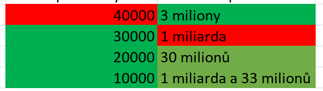
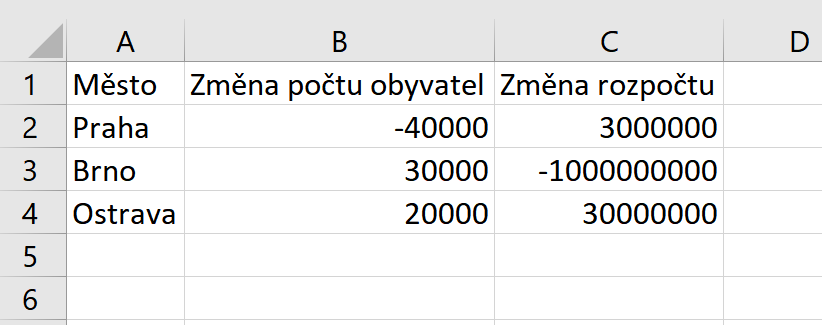
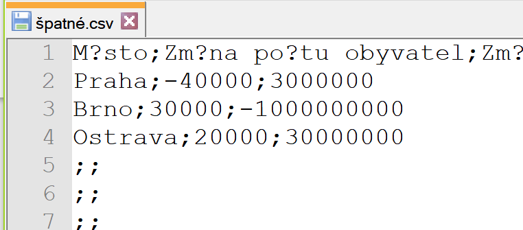
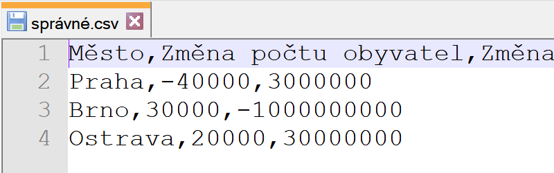

Zde naleznete co nejstručnější návod na publikaci dat jako otevřená data. Postup si ukážeme na jednorázové publikaci tabulkových dat a na konci shrneme, jak postupovat dál směrem k sytematičtějšímu řešení.
Začneme tedy s typickou tabulkou v Excelu, a skončíme se správně publikovanými tabulkovými otevřenými daty.
Typickým zdrojem otevřených dat je Excelovský soubor. Ten sám o sobě může obsahovat spoustu problémů, kterým se souhrnně říká "Barevný Excel". Ty však nesouvisejí s otevřenými daty.
Předpokládáme tedy, že máme takzvaný "slušný Excel", tedy 1 list, na kterém je tabulka která není formátovaná, začíná v buňce A1, na prvním řádku má názvy sloupců a obsah splňuje alespoň první normální formu.
Takto by to vypadat nemělo. Význam nesmí být určen jen barvou, datumy (čísla, ...) nesmí být v přirozeném jazyce.
Takhle je to lepší. 1 list má 1 tabulku, nejsou použity prázdné ani sloučené buňky pro formátování.
Formátem pro otevřená tabulková data je formát CSV. Tabulku z Excelu tedy musíme do tohoto formátu převést. Přitom je třeba dát pozor na typické chyby, které se při tvorbě CSV souborů vyskytují.
Špatný oddělovač, špatné kódování.
Takhle je to lepší. Zvalidujte si to.
Aby se k CSV souboru někdo dostal, je třeba ho umístit na web. To znamená někam, kde bude mít své stabilní URL. Pak ověříme, že jsme se nedopustili nějaké z rozšířených chyb ve zpřístupnění souboru na webu.
K CSV souboru patří strojově čitelné schéma, které definuje datové typy sloupců, případně poskytuje lepší popis sloupců než-li jejich název. Pro CSV soubor tedy vytvoříme schéma dle standardu CSV on the Web ve formě JSON-LD deskriptoru. Pak ho spolu s CSV souborem vystavíme na web.
Připravíme si metadatový záznam o datové sadě. Měl by být co nejúplnější. Zejména by měl odkazovat na webovou stránku s dokumentací datové sady. Ta by měla být v HTML (jsme na Webu), nikoliv PDF či Word.
Nejjednodušší možností je vyplnit formulář a výslednou zprávu zaslat datovou schránkou do NKOD. Nevyplňujeme jen povinné položky, snažíme se pečlivě vyplnit co nejvíce informací. Ty pak pomůžou uživatelům data najít a pochopit.
Ukázali jsme si postup publikace jednoho souboru. Typicky se ale v instituci nachází celá řada datových sad, které by bylo možno publikovat. Pokud by se ale postupovalo tímto jednoduchým způsobem, brzy by došlo k nejrůznějším zmatkům. Po prvotním úspěchu s pár prvními datovými sadami je tedy nutno přikročit k systematizaci otevírání dat v instituci.
CSV je nejlepší formát pro tabulková data. Stále ale má své nedostatky - nejednoznačná identifikace entit v datech, nutnost hledání použitých číselníků a jiných souvisejících dat apod. Tyto nedostatky jsou vyřešeny použitím tzv. Propojených dat, což je dnes nejlepší způsob publikace dat na webu. Jedním z dalších kroků by tedy mělo být zváýžení publikace dat také tímto vhodnějším způsobem.
Pokud vaše instituce bude publikovat více než pár datových sad, je vhodné implementovat Lokální katalog otevřených dat. Existují pro něj buď open-source implementace, nebo jej lze vyřešit generováním pár souborů. Lokální katalog se jednou registruje do NKOD a dále se již nemusíte zabývat posíláním datových zpráv. NKOD si vše potřebné bude pravidelně číst z vašeho katalogu.